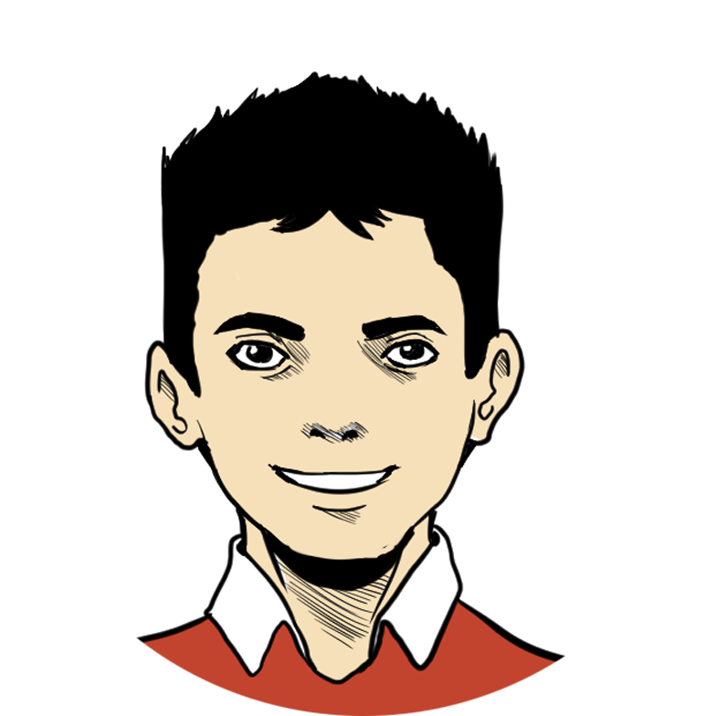
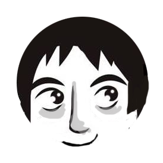
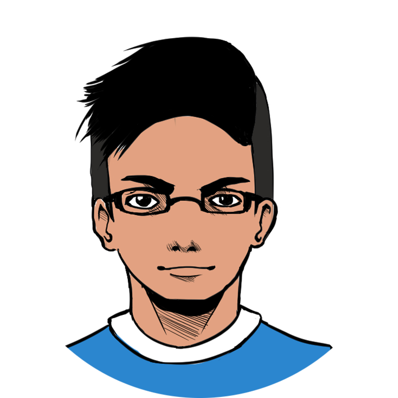
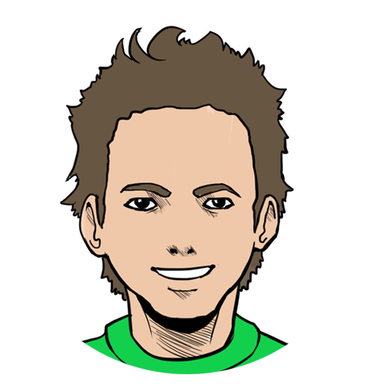
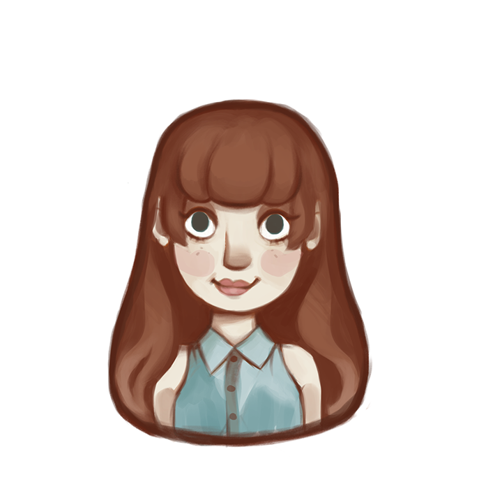
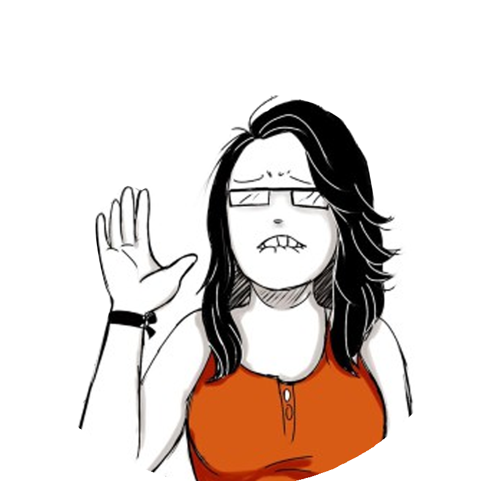
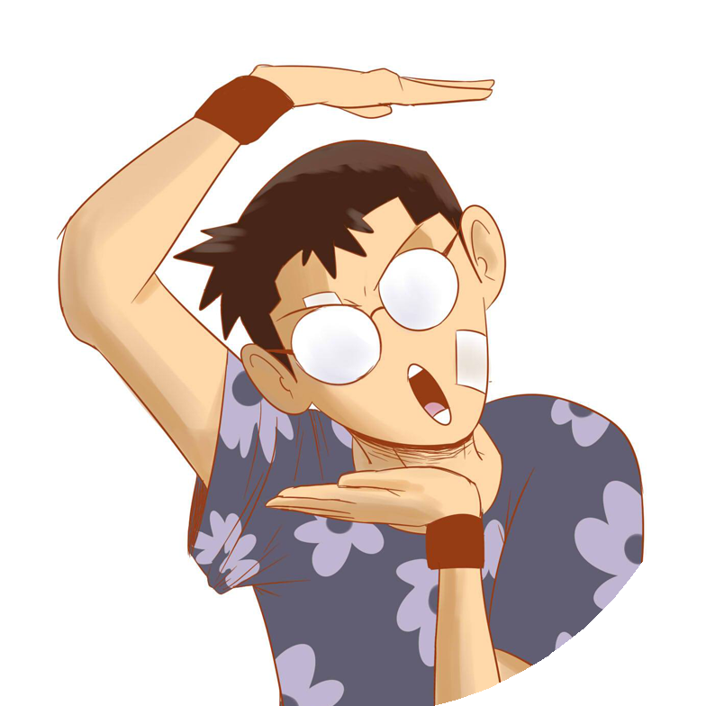

Nosotros pensamos que el mañana puede ser aún mejor si aprendemos, asimilamos y practicamos los conocimientos de Japón, con una de las mayores economías en el mundo y una de las culturas más antiguas del planeta.
Esperamos que te diviertas aprendiendo con nosotros y leyendo en nuestro blog.
Nuestro Equipo
Javier
(Javi)
Javier es el fundador y editor de Kizuna Club. Es desarrollador web y profesor de japonés del nivel básico en la Asociación Colombo Japonesa Seccional Atlántico. Le apasiona el desarrollo web, el marketing digital e investigar sobre nuevas herramientas de educación. Cree firmemente que las aplicaciones web y móviles pueden mejorar el mundo y hacerlo un lugar mejor.

Luisk
(Presto)
Luisk es uno de los primeros miembros del equipo fundador de la plataforma. Es el encargado de la investigación y desarrollo de la tecnología con el fin de crear aplicaciones que nos permitan aprender mejor el idioma japonés. Desde niño es aficionado a la vida sana y a los deportes, en especial al basketball. Cuando no está trabajando y desarrollando aplicaciones, se dedica a entrenar y fortalecerse físicamente.

Carlos
(Ignus)
Es ilustrador en Kizuna Club y además se encarga de diseñar la interfaz gráfica de la plataforma. Le gusta todo lo relacionado con la educación y la creación de materiales educativos. Mientras no está dedicado a crear arte para nosotros, se concentra en administrar su grupo sobre ilusiones ópticas aplicadas en el diseño y la arquitectura.

Christian
(Chris)
Christian es el mangaka del equipo. Es estudiante de diseño gráfico y siempre nos colabora con las ilustraciones del blog mientras que a la vez trabaja en historiales originales de manga para ArtBook Project. Sus géneros favoritos son fantasía, ciencia ficción y deportes, del cual habla a diario, ya sea sobre manga o sobre la vida real.

David
(Niño)
David es nuestro nuevo autor en el blog. Es estudiante de historia y le encanta aprender idiomas, entre ellos el inglés, alemán, latín y japonés. Desde niño le gustaba la cultura oriental lo que le llevo a practicar karate y taekwondo, leer manga, ver anime y dibujar. En su tiempo libre además de dibujar, lee, juega videojuegos y hace ejercicio.

Gabriela
(Gabee)
Gabriela es estudiante de Diseño Gráfico y Coordinadora de Actividades en el evento de hobbies OZ FEST COLOMBIA de Barranquilla. Desde muy pequeña le apasiona la ilustración, las manualidades y las artes. En sus ratos libres se dedica a el cosplay, diseño de vestuarios y de vez en cuando a pasear y conocer nuevos lugares

Oriana
(Ori)
estudios de Derecho en la Universidad del Atlántico. Ilustradora freelance y gestora de actividades sobre creación de cómic nacional. Le gusta los cómics, el dibujo y los derechos de autor.
Ana
(Anna La Plena)
Profesional en diseño gráfico e ilustradora, directora de arte de ''Anna la Plena'' escribe en sus ratos libres y alimenta gatos de la calle, desde niña siempre ha soñado con realizar dibujos animados, desea mejorar sus habilidades en cada momento de su vida; le gusta leer y el cine, amante de la pizza y el brownie con helado.

Camilo
(Pizza slayer)
Ilustrador barranquillero amante de las peliculas violentas y estúpidas. Cuando no ilustro ando completando mi pokedex. Actualmente trabajo hacienod mock ups para apps. En mis ilustraciones me gusta siempre mostrar un buen coloreado y composiciones dinámicas.
Vicky
(Vicky Vane)
Vicky es blogger de “Panda en Redes” y administradora de Aprende Japonés "Ecuador" 鶴"La Grulla". Apasionada por el Marketing Digital, la cocina y cultura japonesa. Ecuatoriana y estudiante del Master en Social Media y Marketing Digital en Madrid. Practica japonés en Nihonguear de Casa Asia Madrid. Su sueño es conocer Japón y trabajar en YKK.